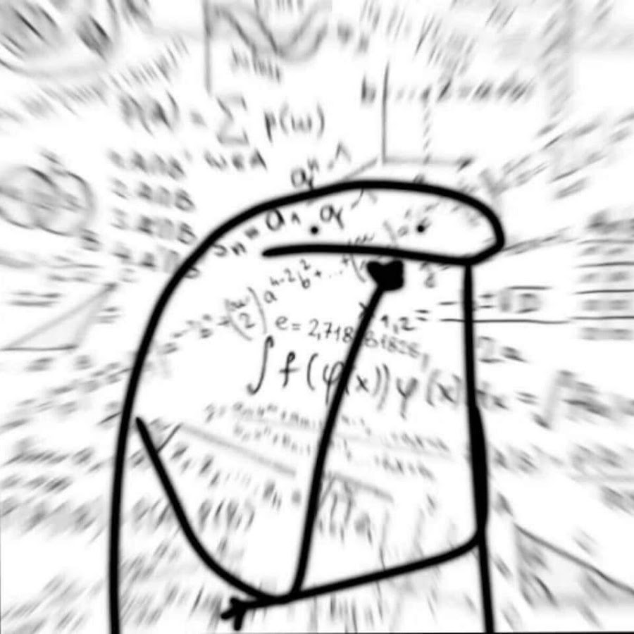
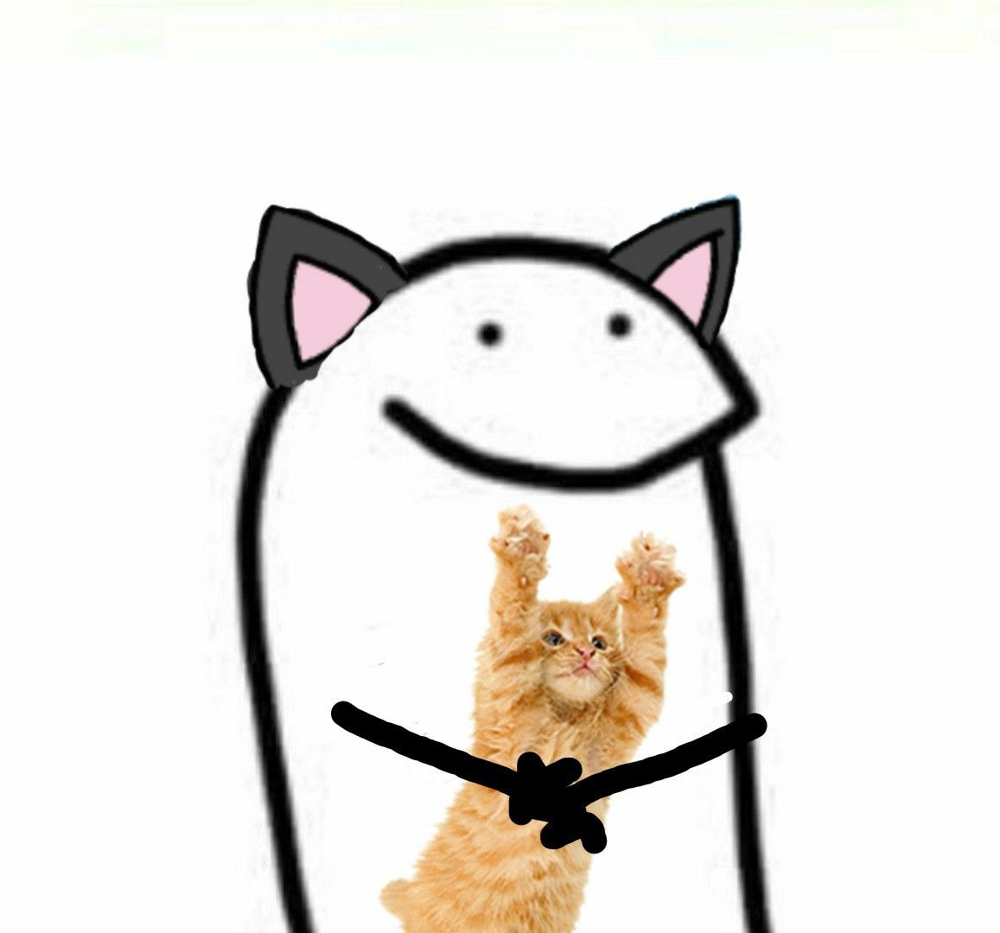
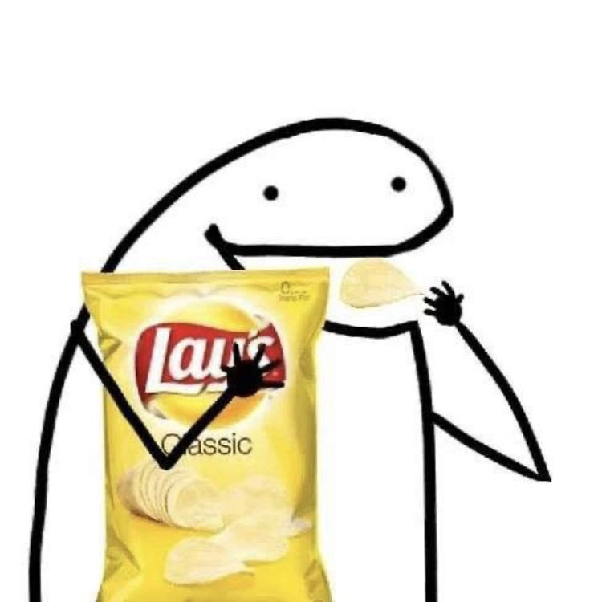

🤨 задумался 🤨
Мем — единица значимой для культуры информации. Мемом является любая идея, символ, манера, ситуация или образ действия, осознанно или неосознанно передаваемые от человека к человеку посредством речи, письма, видео, ритуалов, жестов и т. д. Термин «мем» и его понимание были введены эволюционным биологом Ричардом Докинзом в 1976 году в книге «Эгоистичный ген».

🐱 котик 🐱

🥔✨ чипсики ✨🥔